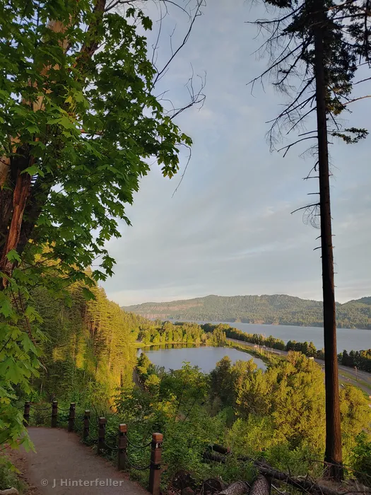
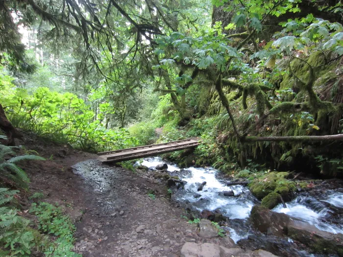
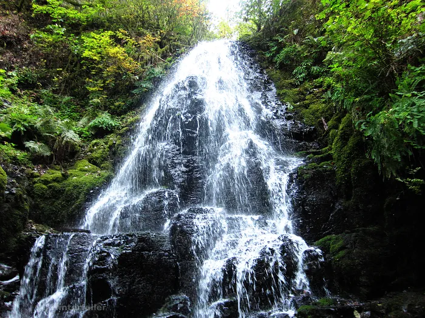
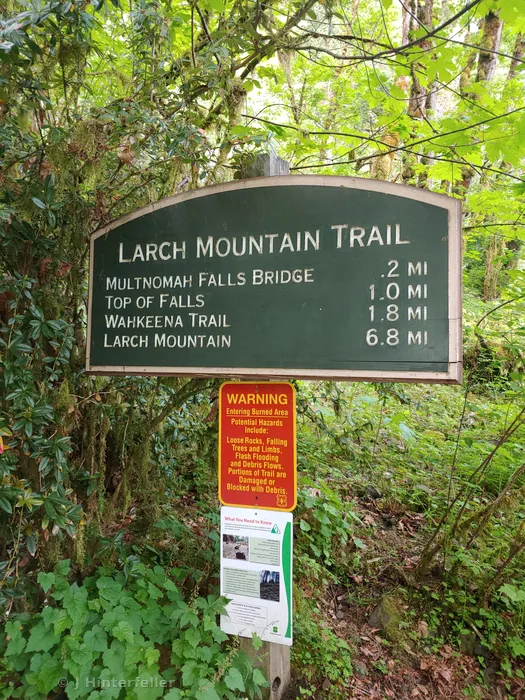
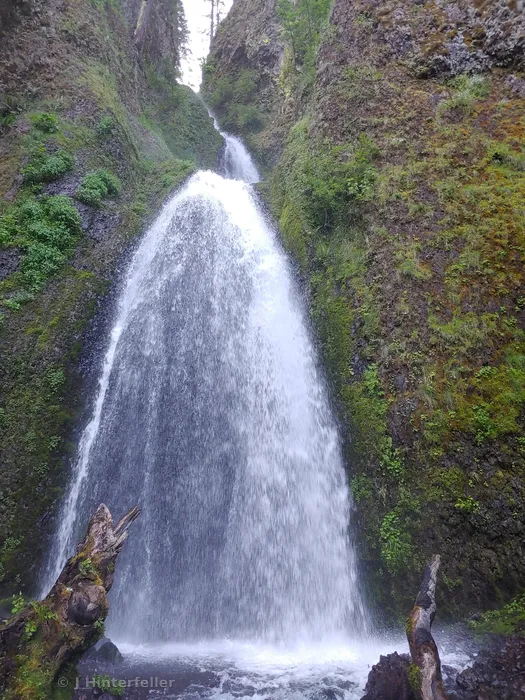
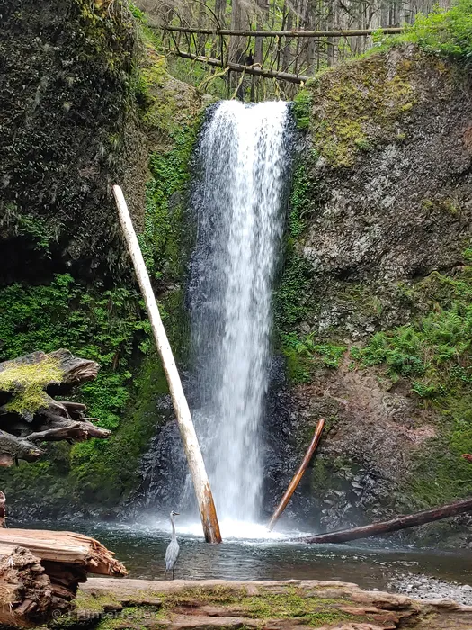

Interstate 84 going east out of Portland, OR, at Exit 31, is a paradox of hectic, heavy traffic contradicted by the veil of misty Multnomah Falls on the right and the tranquil view of the mighty Columbia River on the left.


Take the left-lane exit and the parking area is in the median. There is an underpass walkway to get to the viewing area of Multnomah Falls.
The name Multnomah translates roughly as “close to the water” in the Chinook language. Several tribes used a version of the language for trading with each other. It is easy to imagine a family trading their wapato roots for dried salmon and foraging in the forests and along the shore.
Multnomah Falls has that irresistible allure and draws many visitors. This main attraction gets people to stop and enjoy a moment, take a few photos and continue on with their busy lives. This is like going to Powell’s Books and taking a photo of your favorite book cover. What lies beyond the grand finale is a culmination of mountain springs, cascading falls, and a tranquil adventure that will get the heart pumping and the mind at peace.


Update: The Exit 31 lot has added time slots to the parking area so if you plan to do that you should check recreation.gov and search: Multnomah Falls (I-84) Timed Use Permit to plan up to two weeks in advance. The Wahkeena Loop Trail can be done in either direction. If I had the chance to go back, I would take exit 28 and park in the Wahkeena Parking lot. It’s the same route and you can go either clockwise or counter clockwise. I will give you the clockwise way and if you park at the Wahkeena area just do step 8 first. You can also pick up a map at the lodge.
It’s a little over a 5-mile loop with about a 1600 feet total elevation gain.




1. Going clockwise gets the tough part out of the way first. Take your time. At Multnomah Falls, follow the paved Larch Mountain Trail #441 up to Benson Bridge. The bridge spans between the two tiers of Multnomah Falls.
2. The Switchbacks: After the bridge, the paved trail switchbacks up for a mile. You'll see numbered switchback signs (11 down to 1 when you're going up). In about 1.1 miles past the bridge, there's a signed spur to the right to the viewpoint on top Multnomah Falls upper tier - 542 ft drop. Take the detour, before continuing on the loop.


...


Concluding thoughts for the article go here, wrapping up the dispatch cleanly before the footer.